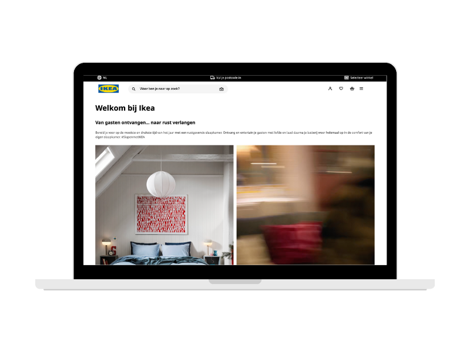

IKEA Redesign
Portfolio
Ik ben Xavannah Baars, tweedejaars student Communication and Multimedia Design aan de Hogeschool van Amsterdam. Ik heb een passie voor het creëren van gebruiksvriendelijke digitale ervaringen die intuïtief design combineren met soepele functionaliteit. Als ambitieuze UX-designer en front-end developer werk ik graag op het snijvlak van design en technologie. Mijn passie ligt in HTML, CSS en het ontwikkelen van gebruiksvriendelijke interfaces die er niet alleen goed uitzien, maar ook toegankelijk zijn.

Ik ben Xavannah Baars, tweedejaars student Communication and Multimedia Design aan de Hogeschool van Amsterdam. Ik heb een passie voor het creëren van gebruiksvriendelijke digitale ervaringen die intuïtief design combineren met soepele functionaliteit. Als ambitieuze UX-designer en front-end developer werk ik graag op het snijvlak van design en technologie. Mijn passie ligt in HTML, CSS en het ontwikkelen van gebruiksvriendelijke interfaces die er niet alleen goed uitzien, maar ook toegankelijk zijn.
Mijn portfolio weerspiegelt een gevarieerde verzameling projecten die ik tijdens mijn studie heb gemaakt. Van interactieve webapplicaties tot visuele ontwerpen, elk project heeft een eigen functionaliteit en demonstreert mijn passie voor creativiteit en innovatie.